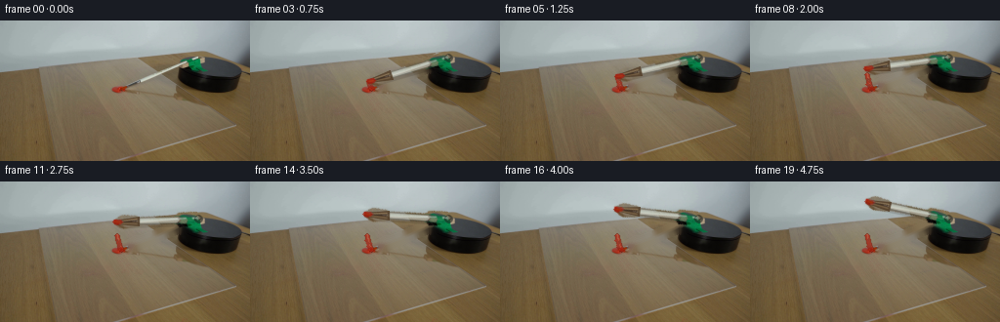
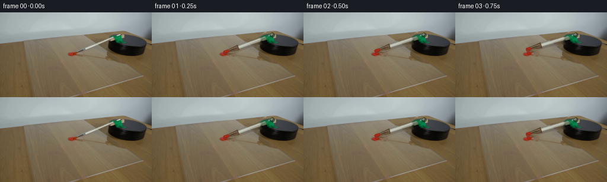

CODING AGENTS AS PIXEL WORLD MODELS
traex/GPT-5.6-Sol · 0130
点击播放 · 原生 RGB 像素
逐轮保存的候选
回放视频、检查图与代码变化。
每份候选均可单独播放。实际图片检查记录在下方工具轨迹中。
候选 01播放与检查图
点击播放 · 原生 RGB 像素


展开代码变化
--- 上一保存版本
+++ 本次保存版本
@@ -0,0 +1,217 @@
+from pathlib import Path
+import math
+
+import cv2
+import numpy as np
+from PIL import Image
+
+import artifact_io
+
+CASE_DIR = Path(__file__).resolve().parent
+W, H = 256, 144
+PIVOT = np.array([203.0, 38.0], np.float32)
+THETA0 = math.atan2(70.0 - PIVOT[1], 123.0 - PIVOT[0])
+RADIUS = float(np.hypot(123.0 - PIVOT[0], 70.0 - PIVOT[1]))
+
+
+def point(radius, theta):
+ return np.array([PIVOT[0] + radius * math.cos(theta),
+ PIVOT[1] + radius * math.sin(theta)], np.float32)
+
+
+def brush_polygon(samples):
+ """A tapered mask around the brush, given (distance, half-width) samples."""
+ u = np.array([math.cos(THETA0), math.sin(THETA0)], np.float32)
+ n = np.array([-u[1], u[0]], np.float32)
+ left = [PIVOT + u * r + n * w for r, w in samples]
+ right = [PIVOT + u * r - n * w for r, w in reversed(samples)]
+ return np.round(np.vstack([left, right])).astype(np.int32)
+
+
+def alpha_over(dst, src, alpha):
+ a = np.asarray(alpha, np.float32)[..., None] / 255.0
+ return np.clip(dst.astype(np.float32) * (1.0 - a) +
+ src.astype(np.float32) * a, 0, 255).astype(np.uint8)
+
+
+def overlay_layer(dst, layer, alpha):
+ return alpha_over(dst, layer, alpha)
+
+
+def make_background_and_cutout(source):
+ # The mask follows the visible green handle, narrow reflective ferrule,
+ # and tapered bristle bundle in the source photograph.
+ shape = [(2, 7.0), (20, 7.0), (23, 4.2), (61, 3.8),
+ (65, 5.5), (78, 6.0), (86, 2.0)]
+ obj_hard = np.zeros((H, W), np.uint8)
+ cv2.fillPoly(obj_hard, [brush_polygon(shape)], 255)
+
+ # Keep the axle itself fixed; only the arm beyond it is uncovered.
+ removal_shape = [(9, 7.8), (21, 7.8), (25, 5.2), (62, 5.0),
+ (67, 7.0), (86, 4.0)]
+ removal = np.zeros((H, W), np.uint8)
+ cv2.fillPoly(removal, [brush_polygon(removal_shape)], 255)
+ removal = cv2.dilate(removal, np.ones((3, 3), np.uint8), iterations=1)
+
+ # Do not erase the actual red paint while removing the original brush.
+ bgr = cv2.cvtColor(source, cv2.COLOR_RGB2BGR)
+ hsv = cv2.cvtColor(bgr, cv2.COLOR_BGR2HSV)
+ red = ((((hsv[..., 0] < 13) | (hsv[..., 0] > 170)) &
+ (hsv[..., 1] > 75) & (hsv[..., 2] > 65))).astype(np.uint8) * 255
+ red_keep = cv2.dilate(red, np.ones((3, 3), np.uint8), iterations=1)
+ removal[red_keep > 0] = 0
+
+ restored_bgr = cv2.inpaint(bgr, removal, 4, cv2.INPAINT_TELEA)
+ restored = cv2.cvtColor(restored_bgr, cv2.COLOR_BGR2RGB)
+
+ # Feathering is for later rotated composites. The interior remains opaque,
+ # retaining true photographic grain and highlights from first_frame.png.
+ obj_soft = cv2.GaussianBlur(obj_hard, (0, 0), 0.65)
+ obj_soft[obj_hard > 245] = 255
+ return restored, obj_soft, red
+
+
+def paint_smear(frame, theta, frame_index, rng):
+ """Cumulative short arc where wet bristles have crossed the dollop."""
+ layer = frame.copy()
+ alpha = np.zeros((H, W), np.uint8)
+ swept = max(0.0, theta - THETA0)
+ wet_span = math.radians(10.5)
+ reach = min(swept, wet_span)
+ if reach > 1e-6:
+ count = max(2, int(reach / math.radians(0.55)) + 1)
+ angles = np.linspace(THETA0, THETA0 + reach, count)
+ pts = np.round(np.array([point(RADIUS - 1.0, a) for a in angles])).astype(np.int32)
+ # A dark underside and a vermilion wet ridge make the streak read as
+ # viscous paint rather than a flat computer line.
+ cv2.polylines(layer, [pts], False, (111, 25, 13), 4, cv2.LINE_AA)
+ cv2.polylines(alpha, [pts], False, 150, 4, cv2.LINE_AA)
+ cv2.polylines(layer, [pts], False, (174, 43, 24), 2, cv2.LINE_AA)
+ cv2.polylines(alpha, [pts], False, 235, 2, cv2.LINE_AA)
+ if len(pts) > 2:
+ hi = pts.copy()
+ hi[:, 1] -= 1
+ cv2.polylines(layer, [hi], False, (202, 66, 39), 1, cv2.LINE_AA)
+ cv2.polylines(alpha, [hi], False, 145, 1, cv2.LINE_AA)
+
+ # Tiny deterministic irregularities along the first part of the trail.
+ for k in range(min(7, count)):
+ a = angles[min(count - 1, 1 + k * max(1, count // 8))]
+ rr = RADIUS + rng.uniform(-2.2, 2.0)
+ q = point(rr, a) + rng.normal(0, 0.35, 2)
+ rad = 1 if k else 2
+ col = (153 + int(rng.integers(-12, 18)), 34, 20)
+ cv2.circle(layer, tuple(np.round(q).astype(int)), rad, col, -1, cv2.LINE_AA)
+ cv2.circle(alpha, tuple(np.round(q).astype(int)), rad, 185, -1, cv2.LINE_AA)
+ return overlay_layer(frame, layer, alpha)
+
+
+def add_brush_definition(frame, theta, progress):
+ """Subtle geometry reinforces the rotated photographic cutout."""
+ layer = frame.copy()
+ a = np.zeros((H, W), np.uint8)
+
+ def ip(r):
+ return tuple(np.round(point(r, theta)).astype(int))
+
+ # Offset contact shadow: strongest close to the acrylic sheet.
+ sh = np.zeros_like(frame)
+ sha = np.zeros((H, W), np.uint8)
+ p0, p1 = np.array(ip(17)) + (1, 2), np.array(ip(82)) + (1, 2)
+ cv2.line(sh, tuple(p0), tuple(p1), (38, 28, 20), 7, cv2.LINE_AA)
+ cv2.line(sha, tuple(p0), tuple(p1), 38, 7, cv2.LINE_AA)
+ frame = overlay_layer(frame, sh, sha)
+ layer = frame.copy()
+
+ # Green lacquered handle next to the axle.
+ cv2.line(layer, ip(4), ip(24), (20, 91, 61), 7, cv2.LINE_AA)
+ cv2.line(a, ip(4), ip(24), 98, 7, cv2.LINE_AA)
+ cv2.line(layer, ip(6), ip(23), (60, 133, 91), 2, cv2.LINE_AA)
+ cv2.line(a, ip(6), ip(23), 115, 2, cv2.LINE_AA)
+
+ # Reflective metal ferrule, shaded on its lower edge.
+ cv2.line(layer, ip(22), ip(64), (119, 122, 113), 6, cv2.LINE_AA)
+ cv2.line(a, ip(22), ip(64), 88, 6, cv2.LINE_AA)
+ cv2.line(layer, ip(22), ip(64), (205, 210, 198), 3, cv2.LINE_AA)
+ cv2.line(a, ip(22), ip(64), 150, 3, cv2.LINE_AA)
+ # Fine specular line follows the fixed studio light.
+ n = np.array([-math.sin(theta), math.cos(theta)])
+ h0 = tuple(np.round(point(25, theta) - n * 1.2).astype(int))
+ h1 = tuple(np.round(point(61, theta) - n * 1.2).astype(int))
+ cv2.line(layer, h0, h1, (232, 233, 221), 1, cv2.LINE_AA)
+ cv2.line(a, h0, h1, 128, 1, cv2.LINE_AA)
+
+ # Brown bristles taper into the contact point. Individual lines prevent a
+ # plastic-looking solid triangle.
+ u = np.array([math.cos(theta), math.sin(theta)])
+ n = np.array([-u[1], u[0]])
+ poly = np.array([point(61, theta) + n * 4.6,
+ point(61, theta) - n * 4.6,
+ point(85, theta) - n * 1.5,
+ point(86, theta) + n * 1.2], np.float32)
+ cv2.fillConvexPoly(layer, np.round(poly).astype(np.int32), (81, 59, 37), cv2.LINE_AA)
+ cv2.fillConvexPoly(a, np.round(poly).astype(np.int32), 205, cv2.LINE_AA)
+ for off, col in [(-2.4, (117, 88, 54)), (0.0, (69, 47, 31)), (2.1, (139, 105, 63))]:
+ s = tuple(np.round(point(63, theta) + n * off).astype(int))
+ e = tuple(np.round(point(84, theta) + n * off * 0.25).astype(int))
+ cv2.line(layer, s, e, col, 1, cv2.LINE_AA)
+ cv2.line(a, s, e, 150, 1, cv2.LINE_AA)
+
+ # Wet red paint remains on the last few millimetres after contact.
+ wet = max(0.46, 1.0 - 0.43 * progress)
+ q0, q1 = ip(80), ip(86)
+ cv2.line(layer, q0, q1, (157, 35, 20), 4, cv2.LINE_AA)
+ cv2.line(a, q0, q1, int(235 * wet), 4, cv2.LINE_AA)
+ cv2.line(layer, q0, q1, (198, 55, 31), 1, cv2.LINE_AA)
+ cv2.line(a, q0, q1, int(170 * wet), 1, cv2.LINE_AA)
+
+ return overlay_layer(frame, layer, a)
+
+
+def generate():
+ source = np.asarray(Image.open(CASE_DIR / "first_frame.png").convert("RGB"), dtype=np.uint8)
+ if source.shape != (H, W, 3):
+ raise ValueError(f"first_frame.png must be {(W, H)}, got {source.shape}")
+ background, object_alpha, _ = make_background_and_cutout(source)
+
+ frames = [source.copy()] # Contract: frame 00 is pixel-identical.
+ total_rotation = math.radians(34.0) # slow, real-time tabletop demonstration
+
+ for i in range(1, 20):
+ progress = i / 19.0
+ theta = THETA0 + total_rotation * progress # clockwise in image coordinates
+ delta_deg = math.degrees(theta - THETA0)
+ rng = np.random.default_rng(130013 + i)
+
+ frame = background.copy()
+ frame = paint_smear(frame, theta, i, rng)
+
+ # OpenCV positive angles are visually counter-clockwise; use the
+ # negative sign for the requested clockwise rotation.
+ matrix = cv2.getRotationMatrix2D(tuple(PIVOT), -delta_deg, 1.0)
+ moved_rgb = cv2.warpAffine(source, matrix, (W, H), flags=cv2.INTER_CUBIC,
+ borderMode=cv2.BORDER_REFLECT_101)
+ moved_alpha = cv2.warpAffine(object_alpha, matrix, (W, H), flags=cv2.INTER_LINEAR,
+ borderMode=cv2.BORDER_CONSTANT, borderValue=0)
+ frame = alpha_over(frame, moved_rgb, moved_alpha)
+ frame = add_brush_definition(frame, theta, progress)
+
+ # The axle remains visually anchored over the platform.
+ axle_layer = frame.copy()
+ axle_alpha = np.zeros((H, W), np.uint8)
+ c = tuple(np.round(PIVOT).astype(int))
+ cv2.circle(axle_layer, c, 4, (31, 34, 30), -1, cv2.LINE_AA)
+ cv2.circle(axle_alpha, c, 4, 145, -1, cv2.LINE_AA)
+ cv2.circle(axle_layer, (c[0] - 1, c[1] - 1), 2, (116, 120, 105), -1, cv2.LINE_AA)
+ cv2.circle(axle_alpha, (c[0] - 1, c[1] - 1), 2, 115, -1, cv2.LINE_AA)
+ frame = overlay_layer(frame, axle_layer, axle_alpha)
+ frames.append(frame.astype(np.uint8))
+
+ frames = np.stack(frames, axis=0).astype(np.uint8)
+ assert np.array_equal(frames[0], source)
+ artifact_io.save(frames, CASE_DIR)
+ return frames
+
+
+if __name__ == "__main__":
+ generate()
可观测工具轨迹
实际执行的命令与返回图片。
命令 1exit 0
/bin/bash -lc "cat prompt.txt && printf '\\n--- GENERATION_RULES ---\\n' && cat GENERATION_RULES.md"
命令 2exit 0
/bin/bash -lc "find . -maxdepth 2 -type f -printf '%p\\n' | sort && printf '\\n--- tools ---\\n' && command -v ffmpeg || true && command -v python3 || true"
命令 3exit 0
/bin/bash -lc "python3 - <<'PY'
from PIL import Image
import numpy as np
im=Image.open('first_frame.png').convert('RGB')
a=np.asarray(im)
print('size',im.size,'shape',a.shape,'dtype',a.dtype)
print('minmax',a.min(axis=(0,1)),a.max(axis=(0,1)),'mean',a.mean(axis=(0,1)))
PY"命令 4exit 0
/bin/bash -lc 'cat artifact_io.py'
命令 5exit 0
/bin/bash -lc "python3 - <<'PY'
import cv2
print('cv2',cv2.__version__)
PY"命令 6exit 0
/bin/bash -lc "python3 - <<'PY'
from PIL import Image
import numpy as np
from collections import Counter
A=np.array(Image.open('first_frame.png').convert('RGB'))
# grid block summaries: dominant rough HSV symbol by coordinates
import colorsys
chars=[]
for y in range(0,144,8):
row=''
for x in range(0,256,8):
p=A[y:y+8,x:x+8].mean((0,1))/255
h,s,v=colorsys.rgb_to_hsv(*p)
if v<.12:c='K'
elif v<.25:c='k'
elif s<.08:c='.' if v>.6 else 'g'
elif h<.04 or h>.96:c='R'
elif h<.10:c='O'
elif h<.18:c='Y'
elif h<.45:c='G'
elif h<.70:c='B'
else:c='P'
row+=c
print(f'{y:03d} '+row)
print(' '+''.join(str((i//10)%10) for i in range(32)))
print(' '+''.join(str(i%10) for i in range(32)))
# red pixels bbox/component
r,g,b=A[:,:,0],A[:,:,1],A[:,:,2]
for name,m in [('red',(r>g*1.3)&(r>b*1.25)&(r>80)),('dark',(A.mean(2)<45)),('neutral',(np.max(A,2)-np.min(A,2)<10))]:
ys,xs=np.where(m)
print(name,len(xs), (xs.min(),ys.min(),xs.max(),ys.max()) if len(xs) else None)
PY"命令 7exit 0
/bin/bash -lc "python3 - <<'PY'
import cv2,numpy as np
from PIL import Image
A=cv2.imread('first_frame.png'); hsv=cv2.cvtColor(A,cv2.COLOR_BGR2HSV)
# components for varying red HSV
for tag,m in [
('sat',(hsv[:,:,1]>100).astype('uint8')),
('red',(((hsv[:,:,0]<12)|(hsv[:,:,0]>170))&(hsv[:,:,1]>100)&(hsv[:,:,2]>70)).astype('uint8')),
('brightred',(((hsv[:,:,0]<10)|(hsv[:,:,0]>173))&(hsv[:,:,1]>150)&(hsv[:,:,2]>100)).astype('uint8')),
('black',(hsv[:,:,2]<50).astype('uint8')),
('nearblack',(hsv[:,:,2]<80).astype('uint8')),
('blue',((hsv[:,:,0]>90)&(hsv[:,:,0]<130)&(hsv[:,:,1]>40)).astype('uint8')),
]:
n,lab,stats,cents=cv2.connectedComponentsWithStats(m,8)
comps=sorted([(int(s[4]),tuple(map(int,s[:4])),tuple(np.round(c,1))) for s,c in zip(stats[1:],cents[1:])],reverse=True)[:15]
print('\\n',tag,'count',int(m.sum()))
for z in comps: print(z)
# lines
G=cv2.cvtColor(A,cv2.COLOR_BGR2GRAY)
ed=cv2.Canny(G,30,80)
ls=cv2.HoughLinesP(ed,1,np.pi/180,threshold=25,minLineLength=15,maxLineGap=4)
print('\\nLINES')
for l in sorted(ls[:,0].tolist(), key=lambda q:-((q[2]-q[0])**2+(q[3]-q[1])**2))[:35]: print(l)
# coarse exact block means RGB from likely objects
for y in range(32,105,4):
print('y',y,end=' ')
for x in range(96,257,8):
p=A[y:y+4,x:x+8,::-1].mean((0,1)).astype(int)
# brightness/sat compact
mx=p.max();mn=p.min();
if mx<45:c='##'
elif mx<75:c='kk'
elif mx-mn<12:c='--'
elif p[0]>p[1]*1.35 and p[0]>p[2]*1.3:c='RR'
elif p[2]>p[0]*1.15:c='BB'
elif p[0]>p[2]*1.2:c='WW'
else:c='..'
print(c,end='')
print()
PY"命令 8exit 0
/bin/bash -lc "python3 - <<'PY'
from PIL import Image
import numpy as np
A=np.array(Image.open('first_frame.png').convert('RGB'))
# sample lines as RGB every 5
lines={'diagbrush?':((135,66),(210,33)),'cross?':((140,37),(190,72)),'tip-pivot?':((120,71),(220,55)),'platform':((180,55),(255,55))}
for n,(p,q) in lines.items():
print('\\n',n)
d=np.hypot(q[0]-p[0],q[1]-p[1]); N=int(d//3)+1
for i in range(N):
t=i/max(1,N-1); x=round(p[0]*(1-t)+q[0]*t);y=round(p[1]*(1-t)+q[1]*t)
print(f'{x:3},{y:3}:{tuple(A[y,x])}',end=' ')
if i%5==4:print()
print()
# rows runs classified exact broad for crop x100-230, y28-84 every2 pixels
# chars: dark #, red R, desat bright |, yellowwood w, high sat brown o, green etc
for y in range(28,86,2):
s=''
for x in range(100,232,2):
p=A[y:y+2,x:x+2].mean((0,1)); mx=p.max();mn=p.min();
if mx<55:c='#'
elif mx<90:c='k'
elif mx-mn<8:c='n'
elif p[0]>p[1]*1.45 and p[0]>p[2]*1.35:c='R'
elif p[0]-p[2]>45:c='o'
elif p[0]-p[2]>25:c='w'
elif p[2]>p[0]+12:c='b'
elif p[1]>p[0]+8:c='g'
else:c='.'
s+=c
print(f'{y:3} {s}')
print(' '+''.join(str((x//10)%10) for x in range(100,232,2)))
PY"命令 9exit 0
/bin/bash -lc "python3 - <<'PY'
import cv2,numpy as np
A=cv2.imread('first_frame.png'); H=cv2.cvtColor(A,cv2.COLOR_BGR2HSV)
# classify one char each x=115..225 y=28..78; print each pixel (downsample no)
# G green h 35-90, sat>80; D dark v<70; R red; T tan sat 40+ hue<30; W light neutral; n other
for y in range(28,79):
s=''
for x in range(110,226):
h,sa,v=H[y,x]
if v<50:c='#'
elif v<85:c='d'
elif ((h<12 or h>170) and sa>100):c='R'
elif 35<h<95 and sa>60:c='G'
elif sa<25 and v>150:c='W'
elif sa<30:c='n'
elif 5<h<35 and sa>45:c='t'
elif v>150:c='.'
else:c='x'
s+=c
print(f'{y:02d} {s}')
print(' '+''.join(str((x//10)%10) for x in range(110,226)))
print(' '+''.join(str(x%10) for x in range(110,226)))
PY"命令 10exit 0
/bin/bash -lc "python3 - <<'PY'
import cv2,numpy as np
A=cv2.imread('first_frame.png'); H=cv2.cvtColor(A,cv2.COLOR_BGR2HSV)
# detailed hue/sat char crop x125:226 y25:78, output 1 char/pixel
for y in range(25,79):
s=''
for x in range(125,226):
h,sa,v=map(int,H[y,x])
if v<45:c='#'
elif v<80:c='d'
elif ((h<10 or h>170) and sa>100):c='R'
elif 30<h<95 and sa>100:c='G'
elif 30<h<95 and sa>50:c='g'
elif sa<18 and v>150:c='L'
elif sa<30 and v>130:c='l'
elif sa<30:c='n'
elif 5<h<30 and sa>70:c='T'
elif 5<h<30 and sa>35:c='t'
elif v>150:c='.'
else:c='x'
s+=c
print(f'{y:02d} {s}')
print(' '+''.join(str((x//10)%10) for x in range(125,226)))
print(' '+''.join(str(x%10) for x in range(125,226)))
# green pixel ranges each row
print('green extents')
m=(H[:,:,0]>30)&(H[:,:,0]<95)&(H[:,:,1]>50)
for y in range(25,75):
xs=np.where(m[y])[0]
xs=xs[(xs>110)&(xs<230)]
if len(xs): print(y,xs.min(),xs.max(),len(xs))
PY"命令 11exit 0
/bin/bash -lc "python3 - <<'PY'
import cv2,numpy as np
A=cv2.imread('first_frame.png'); G=cv2.cvtColor(A,cv2.COLOR_BGR2GRAY); E=cv2.Canny(G,20,60)
# ASCII edges x110-215 y25-85 every pixel
for y in range(25,86):
print(f'{y:02d} '+''.join('#' if E[y,x] else ' ' for x in range(110,216)))
print(' '+''.join(str((x//10)%10) for x in range(110,216)))
print(' '+''.join(str(x%10) for x in range(110,216)))
PY"命令 12exit 0
/bin/bash -lc "python3 - <<'PY'
from PIL import Image
import numpy as np
A=np.array(Image.open('first_frame.png').convert('RGB')).astype(int)
# presumed brush axis p0 122,70 p1 205,36.5; perp normalized .377,.926
for x in range(120,211,5):
y=.407*(202-x)+37
vals=[]
for d in range(-8,9):
xx=round(x + .377*d); yy=round(y+.926*d)
p=A[yy,xx]; vals.append('%02x%02x%02x'%tuple(p))
print(f'x{x} y{y:.1f}', ' '.join(vals))
PY"命令 13exit 0
/bin/bash -lc "cat > generate.py <<'PY'
from pathlib import Path
import math
import cv2
import numpy as np
from PIL import Image
import artifact_io
CASE_DIR = Path(__file__).resolve().parent
W, H = 256, 144
PIVOT = np.array([203.0, 38.0], np.float32)
THETA0 = math.atan2(70.0 - PIVOT[1], 123.0 - PIVOT[0])
RADIUS = float(np.hypot(123.0 - PIVOT[0], 70.0 - PIVOT[1]))
def point(radius, theta):
return np.array([PIVOT[0] + radius * math.cos(theta),
PIVOT[1] + radius * math.sin(theta)], np.float32)
def brush_polygon(samples):
\"\"\"A tapered mask around the brush, given (distance, half-width) samples.\"\"\"
u = np.array([math.cos(THETA0), math.sin(THETA0)], np.float32)
n = np.array([-u[1], u[0]], np.float32)
left = [PIVOT + u * r + n * w for r, w in samples]
right = [PIVOT + u * r - n * w for r, w in reversed(samples)]
return np.round(np.vstack([left, right])).astype(np.int32)
def alpha_over(dst, src, alpha):
a = np.asarray(alpha, np.float32)[..., None] / 255.0
return np.clip(dst.astype(np.float32) * (1.0 - a) +
src.astype(np.float32) * a, 0, 255).astype(np.uint8)
def overlay_layer(dst, layer, alpha):
return alpha_over(dst, layer, alpha)
def make_background_and_cutout(source):
# The mask follows the visible green handle, narrow reflective ferrule,
# and tapered bristle bundle in the source photograph.
shape = [(2, 7.0), (20, 7.0), (23, 4.2), (61, 3.8),
(65, 5.5), (78, 6.0), (86, 2.0)]
obj_hard = np.zeros((H, W), np.uint8)
cv2.fillPoly(obj_hard, [brush_polygon(shape)], 255)
# Keep the axle itself fixed; only the arm beyond it is uncovered.
removal_shape = [(9, 7.8), (21, 7.8), (25, 5.2), (62, 5.0),
(67, 7.0), (86, 4.0)]
removal = np.zeros((H, W), np.uint8)
cv2.fillPoly(removal, [brush_polygon(removal_shape)], 255)
removal = cv2.dilate(removal, np.ones((3, 3), np.uint8), iterations=1)
# Do not erase the actual red paint while removing the original brush.
bgr = cv2.cvtColor(source, cv2.COLOR_RGB2BGR)
hsv = cv2.cvtColor(bgr, cv2.COLOR_BGR2HSV)
red = ((((hsv[..., 0] < 13) | (hsv[..., 0] > 170)) &
(hsv[..., 1] > 75) & (hsv[..., 2] > 65))).astype(np.uint8) * 255
red_keep = cv2.dilate(red, np.ones((3, 3), np.uint8), iterations=1)
removal[red_keep > 0] = 0
restored_bgr = cv2.inpaint(bgr, removal, 4, cv2.INPAINT_TELEA)
restored = cv2.cvtColor(restored_bgr, cv2.COLOR_BGR2RGB)
# Feathering is for later rotated composites. The interior remains opaque,
# retaining true photographic grain and highlights from first_frame.png.
obj_soft = cv2.GaussianBlur(obj_hard, (0, 0), 0.65)
obj_soft[obj_hard > 245] = 255
return restored, obj_soft, red
def paint_smear(frame, theta, frame_index, rng):
\"\"\"Cumulative short arc where wet bristles have crossed the dollop.\"\"\"
layer = frame.copy()
alpha = np.zeros((H, W), np.uint8)
swept = max(0.0, theta - THETA0)
wet_span = math.radians(10.5)
reach = min(swept, wet_span)
if reach > 1e-6:
count = max(2, int(reach / math.radians(0.55)) + 1)
angles = np.linspace(THETA0, THETA0 + reach, count)
pts = np.round(np.array([point(RADIUS - 1.0, a) for a in angles])).astype(np.int32)
# A dark underside and a vermilion wet ridge make the streak read as
# viscous paint rather than a flat computer line.
cv2.polylines(layer, [pts], False, (111, 25, 13), 4, cv2.LINE_AA)
cv2.polylines(alpha, [pts], False, 150, 4, cv2.LINE_AA)
cv2.polylines(layer, [pts], False, (174, 43, 24), 2, cv2.LINE_AA)
cv2.polylines(alpha, [pts], False, 235, 2, cv2.LINE_AA)
if len(pts) > 2:
hi = pts.copy()
hi[:, 1] -= 1
cv2.polylines(layer, [hi], False, (202, 66, 39), 1, cv2.LINE_AA)
cv2.polylines(alpha, [hi], False, 145, 1, cv2.LINE_AA)
# Tiny deterministic irregularities along the first part of the trail.
for k in range(min(7, count)):
a = angles[min(count - 1, 1 + k * max(1, count // 8))]
rr = RADIUS + rng.uniform(-2.2, 2.0)
q = point(rr, a) + rng.normal(0, 0.35, 2)
rad = 1 if k else 2
col = (153 + int(rng.integers(-12, 18)), 34, 20)
cv2.circle(layer, tuple(np.round(q).astype(int)), rad, col, -1, cv2.LINE_AA)
cv2.circle(alpha, tuple(np.round(q).astype(int)), rad, 185, -1, cv2.LINE_AA)
return overlay_layer(frame, layer, alpha)
def add_brush_definition(frame, theta, progress):
\"\"\"Subtle geometry reinforces the rotated photographic cutout.\"\"\"
layer = frame.copy()
a = np.zeros((H, W), np.uint8)
def ip(r):
return tuple(np.round(point(r, theta)).astype(int))
# Offset contact shadow: strongest close to the acrylic sheet.
sh = np.zeros_like(frame)
sha = np.zeros((H, W), np.uint8)
p0, p1 = np.array(ip(17)) + (1, 2), np.array(ip(82)) + (1, 2)
cv2.line(sh, tuple(p0), tuple(p1), (38, 28, 20), 7, cv2.LINE_AA)
cv2.line(sha, tuple(p0), tuple(p1), 38, 7, cv2.LINE_AA)
frame = overlay_layer(frame, sh, sha)
layer = frame.copy()
# Green lacquered handle next to the axle.
cv2.line(layer, ip(4), ip(24), (20, 91, 61), 7, cv2.LINE_AA)
cv2.line(a, ip(4), ip(24), 98, 7, cv2.LINE_AA)
cv2.line(layer, ip(6), ip(23), (60, 133, 91), 2, cv2.LINE_AA)
cv2.line(a, ip(6), ip(23), 115, 2, cv2.LINE_AA)
# Reflective metal ferrule, shaded on its lower edge.
cv2.line(layer, ip(22), ip(64), (119, 122, 113), 6, cv2.LINE_AA)
cv2.line(a, ip(22), ip(64), 88, 6, cv2.LINE_AA)
cv2.line(layer, ip(22), ip(64), (205, 210, 198), 3, cv2.LINE_AA)
cv2.line(a, ip(22), ip(64), 150, 3, cv2.LINE_AA)
# Fine specular line follows the fixed studio light.
n = np.array([-math.sin(theta), math.cos(theta)])
h0 = tuple(np.round(point(25, theta) - n * 1.2).astype(int))
h1 = tuple(np.round(point(61, theta) - n * 1.2).astype(int))
cv2.line(layer, h0, h1, (232, 233, 221), 1, cv2.LINE_AA)
cv2.line(a, h0, h1, 128, 1, cv2.LINE_AA)
# Brown bristles taper into the contact point. Individual lines prevent a
# plastic-looking solid triangle.
u = np.array([math.cos(theta), math.sin(theta)])
n = np.array([-u[1], u[0]])
poly = np.array([point(61, theta) + n * 4.6,
point(61, theta) - n * 4.6,
point(85, theta) - n * 1.5,
point(86, theta) + n * 1.2], np.float32)
cv2.fillConvexPoly(layer, np.round(poly).astype(np.int32), (81, 59, 37), cv2.LINE_AA)
cv2.fillConvexPoly(a, np.round(poly).astype(np.int32), 205, cv2.LINE_AA)
for off, col in [(-2.4, (117, 88, 54)), (0.0, (69, 47, 31)), (2.1, (139, 105, 63))]:
s = tuple(np.round(point(63, theta) + n * off).astype(int))
e = tuple(np.round(point(84, theta) + n * off * 0.25).astype(int))
cv2.line(layer, s, e, col, 1, cv2.LINE_AA)
cv2.line(a, s, e, 150, 1, cv2.LINE_AA)
# Wet red paint remains on the last few millimetres after contact.
wet = max(0.46, 1.0 - 0.43 * progress)
q0, q1 = ip(80), ip(86)
cv2.line(layer, q0, q1, (157, 35, 20), 4, cv2.LINE_AA)
cv2.line(a, q0, q1, int(235 * wet), 4, cv2.LINE_AA)
cv2.line(layer, q0, q1, (198, 55, 31), 1, cv2.LINE_AA)
cv2.line(a, q0, q1, int(170 * wet), 1, cv2.LINE_AA)
return overlay_layer(frame, layer, a)
def generate():
source = np.asarray(Image.open(CASE_DIR / \"first_frame.png\").convert(\"RGB\"), dtype=np.uint8)
if source.shape "'!= (H, W, 3):
raise ValueError(f"first_frame.png must be {(W, H)}, got {source.shape}")
background, object_alpha, _ = make_background_and_cutout(source)
frames = [source.copy()] # Contract: frame 00 is pixel-identical.
total_rotation = math.radians(34.0) # slow, real-time tabletop demonstration
for i in range(1, 20):
progress = i / 19.0
theta = THETA0 + total_rotation * progress # clockwise in image coordinates
delta_deg = math.degrees(theta - THETA0)
rng = np.random.default_rng(130013 + i)
frame = background.copy()
frame = paint_smear(frame, theta, i, rng)
# OpenCV positive angles are visually counter-clockwise; use the
# negative sign for the requested clockwise rotation.
matrix = cv2.getRotationMatrix2D(tuple(PIVOT), -delta_deg, 1.0)
moved_rgb = cv2.warpAffine(source, matrix, (W, H), flags=cv2.INTER_CUBIC,
borderMode=cv2.BORDER_REFLECT_101)
moved_alpha = cv2.warpAffine(object_alpha, matrix, (W, H), flags=cv2.INTER_LINEAR,
borderMode=cv2.BORDER_CONSTANT, borderValue=0)
frame = alpha_over(frame, moved_rgb, moved_alpha)
frame = add_brush_definition(frame, theta, progress)
# The axle remains visually anchored over the platform.
axle_layer = frame.copy()
axle_alpha = np.zeros((H, W), np.uint8)
c = tuple(np.round(PIVOT).astype(int))
cv2.circle(axle_layer, c, 4, (31, 34, 30), -1, cv2.LINE_AA)
cv2.circle(axle_alpha, c, 4, 145, -1, cv2.LINE_AA)
cv2.circle(axle_layer, (c[0] - 1, c[1] - 1), 2, (116, 120, 105), -1, cv2.LINE_AA)
cv2.circle(axle_alpha, (c[0] - 1, c[1] - 1), 2, 115, -1, cv2.LINE_AA)
frame = overlay_layer(frame, axle_layer, axle_alpha)
frames.append(frame.astype(np.uint8))
frames = np.stack(frames, axis=0).astype(np.uint8)
assert np.array_equal(frames[0], source)
artifact_io.save(frames, CASE_DIR)
return frames
if __name__ == "__main__":
generate()
PY
python3 generate.py
python3 - <<'"'PY'
from pathlib import Path
import numpy as np
from PIL import Image
z=np.load('pixels.npz')['pixels']
frames=[]
for i in range(z.shape[2]):
p=z[:,:,i]
frames.append(np.stack([(p>>16)&255,(p>>8)&255,p&255],axis=-1).astype(np.uint8))
F=np.stack(frames)
src=np.array(Image.open('first_frame.png').convert('RGB'))
print('shape/dtype',F.shape,F.dtype)
print('frame00 exact',np.array_equal(F[0],src),'maxdiff',np.abs(F[0].astype(int)-src.astype(int)).max())
for i in [1,2,5,10,15,19]:
d=np.abs(F[i].astype(np.int16)-F[i-1].astype(np.int16))
ys,xs=np.where(np.max(d,2)>8)
print(i,'changed>8',len(xs),'bbox', (int(xs.min()),int(ys.min()),int(xs.max()),int(ys.max())),'mean',round(float(d.mean()),3))
print('outputs',[(p.name,p.stat().st_size) for p in map(Path,['pixels.npz','inspection.png','index.html'])])
PY"命令 14exit 0
/bin/bash -lc "python3 - <<'PY'
import numpy as np, cv2
from PIL import Image
F=np.stack([np.array(Image.open(f'frames/{i:02d}.png').convert('RGB')) for i in range(20)])
# Red mass trajectory; report all saturated-red components > 4 pixels.
for i in [0,1,4,8,12,16,19]:
a=F[i]; h=cv2.cvtColor(a,cv2.COLOR_RGB2HSV)
m=(((h[...,0]<12)|(h[...,0]>170))&(h[...,1]>100)&(h[...,2]>70)).astype('uint8')
n,lab,stats,cents=cv2.connectedComponentsWithStats(m,8)
cs=sorted([(int(s[4]),tuple(np.round(c,1))) for s,c in zip(stats[1:],cents[1:]) if s[4]>4],reverse=True)
print(i,'red components',cs[:5])
# Fixed far-field region must remain unchanged after frame 1.
mask=np.ones((144,256),bool); mask[8:82,108:214]=False
print('far field changed pixels vs frame1', [int(np.any(F[i]"'!=F[1],2)[mask].sum()) for i in [2,5,10,19]])
# temporal totals, ensuring no duplicate/stalled frames
print('"'changed each transition',[int(np.any(F[i]"'!=F[i-1],2).sum()) for i in range(1,20)])
PY'命令 15exit 0
/bin/bash -lc 'python3 -m py_compile generate.py artifact_io.py && git status --short 2>/dev/null || true && find frames -type f | wc -l'
命令 16exit 0
/bin/bash -lc 'sha256sum pixels.npz frames/00.png inspection.png index.html > .tmp/hashes1 && python3 generate.py >/dev/null && sha256sum pixels.npz frames/00.png inspection.png index.html > .tmp/hashes2 && diff -u .tmp/hashes1 .tmp/hashes2 && cat .tmp/hashes2'
保存候选 1 份；完成命令 16 次；可验证图片返回 0 张。原始 API 响应与完整日志保留在本地。